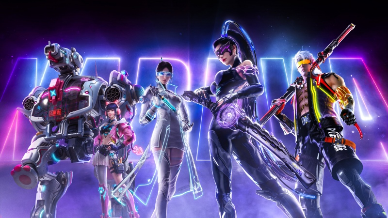

ANIME DETAILS
Cyberpunk: Edgerunners is a fast-paced sci-fi anime set in a futuristic city where advanced technology and crime are part of everyday life.
The story follows David Martinez, a talented young street kid who becomes an edgerunner and enters a dangerous world filled with cybernetics, crime, and powerful corporations.
Type: TV
Episodes: 10
Status: Completed
Rating: ⭐ 8.6